机器学习– 线性回归
一、网格搜索和交叉验证
1. 什么是交叉验证
- 是一种数据集的分割方法，将训练集分成n份，拿==一份做验证集(测试集)==，剩下的==n-1份做训练集==
- KNN中 的==K==指的就是n_neighbors==超参数==，一个参数的改动则会影响整个模型的结果，而且影响还比较大
2. 为什么需要网格搜索？
- 模型有很多的超参数，不同参数其表现能力也不同，需要手动产出很多的==超参数组合==，来训练模型，每组超参数都**==采用交叉验证评估==，最后选出相对最优的参数组合**建立模型
3. 作用：
- 找到相对最优的K值/超参数
- 从而提高模型预测的准确率，使模型效率更高
- ==交叉验证解决：数据集的划分==
- ==网格搜索解决：超参数的自动组合==
4. API：
导包：from sklearn.model_selection import ==GridSearchCV==
model = GridSearchCV()
1 | # 3. 准备模型(此处选择KNN的分类模型) |
3. 步骤：
- 将数据集划分为训练集和测试集
- 将分好的训练集单独取出来做网格搜索交叉验证(分成n份，拿一份做测试集，n-1份做训练集)：
- 首先手动确定超参数组合（ param_grid={‘n_neighbors’:[1,3,5,7,9]}）
- 如果是多种超参数会进行**==两两匹配(笛卡尔积)==，再指定训练数据==交叉验证的次数(cv)==**，每次超参数组合都会有n个分数，我们取出这n个分数的平均值，最后选择平均值最大的那个作为我们的超参数
- 创建模型指定相对最优超参数
- 拿着所有训练集做训练
- 拿着所有测试集做预测/评估
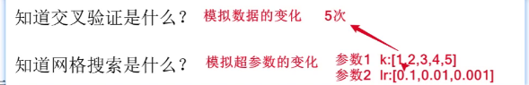
二、 寻找相对最优的w和b
1. 线性回归API
1 | # 导包 |
2. 线性回归的两种思路：正规方程、梯度下降（推荐）
2.0 什么是线性回归？
- 线性回归有两种：
- 一种是一元线性回归 y = wx + b
- 目标值(因变量)只**==与一个特征(自变量)有关系==**
- 另一种是多元线性回归 y = w1x1+w2x2+w3x3+…+b
- 目标值(因变量)==与多个特征(自变量)==
- 一种是一元线性回归 y = wx + b
2.1 正规方程
特点：一步到位
缺点：可能没有解
- ==原因：由于多元线性回归方程最后的结果可能出现矩阵不可逆（奇异矩阵），而矩阵的逆可能无法正常求出，因为矩阵的逆必须是方阵才有单位阵，才能算出矩阵的逆，从而导致多元线性回归无解，此时使用正规方程求k和b就得不到最优的参数，所以一般我们都使用梯度下降方法求相对最优的k和b的值。==
面试常考角度
面试中可能会这样问：
- “正规方程和梯度下降各有什么优缺点？”
- 正规方程：一次计算得到精确解，但需要计算逆矩阵，O(n³)复杂度，可能不可逆
- 梯度下降：迭代求解，适用于大数据和高维情况，总能找到解
- “什么情况下正规方程会失败？如何解决？”
- 回答要点：特征共线性、（特指数）p>（样本数）n、数值不稳定
- 解决方案：正则化、伪逆、特征选择、梯度下降
底层实现：一元线性回归、多元线性回归
一元线性回归：
- 使用损失函数求导=0求极小值，计算得出k和b的值
多元线性回归：
- 同样使用损失函数，但是求偏导=0求极小值，计算得出k和b的值
- 但是计算得出的函数可能出现求矩阵的逆的情况，而矩阵的逆可能无解
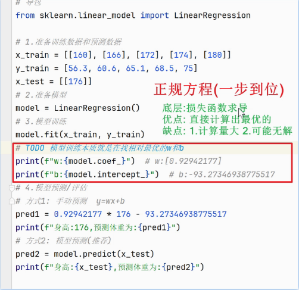
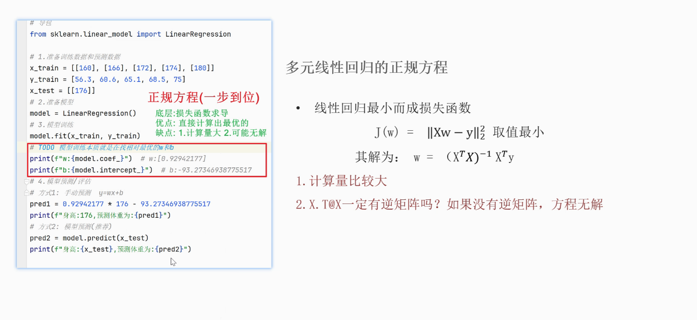
2.2 梯度下降方法（掌握）
- 公式：新参数 = 旧参数 - 学习率*梯度（导数/偏导数，如(Θ²)`=2Θ）

- 大白话解释：盲人杵着拐杖下山
- 名词解析
- ==学习率(步长)==[相当于拐杖]:
- ==学习率过大==(拐杖过长):容易越过极值，从而导致**==梯度爆炸/震荡==**
- 解决方法：梯度求导
- 什么是梯度 gradient grad：
- 单变量函数中，梯度就是**==某一点切线斜率==**（某一点的导数）
- 多变量函数中，梯度就是**==某一个点的偏导数==**
- 梯度下降的分类：

流程:
- 给定初始位置, 步长(学习率)
- 计算该点当前的梯度的负方向.
- 向该负梯度方向移动步长.
- 重复 2 ~ 3步骤, 直至结束.
- 两次差距小于指定的阈值
- 达到指定的迭代次数
- 梯度下降算法核心思想：
- 沿着梯度下降的方向求极小值
- 梯度下降算法的分类：
- BGD/==FGD==：批量梯度下降算法/==全样本梯度==下降算法
- SGD：==随机一个样本==梯度下降算法
- MBGD：==小批量随机==梯度下降算法
- 正规线性方程与梯度下降算法特点比较：
- 正规线性方程：
- 优点：==一步到位==
- 缺点：计算量大，方程==可能无解==
- 梯度下降：
- 优点：==迭代求解，一定能找到解==，特征数量较大可以使用，适合于嘈杂、==大数据==应用场景等
- 缺点：学习率过大可能出现梯度爆炸/震荡
- 正规线性方程：
3. 损失函数
- 什么是损失函数？
- 衡量预测值和真实值之间的差异的函数（LS，MSE，MAE）
- 作用：
- 计算最小损失
- 最小二乘 LS (Least Squares, LS)
- 所有样本(预测值 - 真实值)的平方和
- 均方误差 MSE (Mean-Square Error, MSE)
- 最小二乘 / 样本个数m
- 平均绝对误差 MAE (Mean Absolute Error , MAE)
- sum|预测值 - 真实值| / 样本个数m
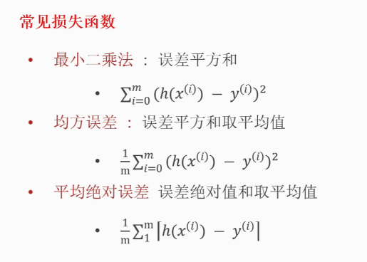
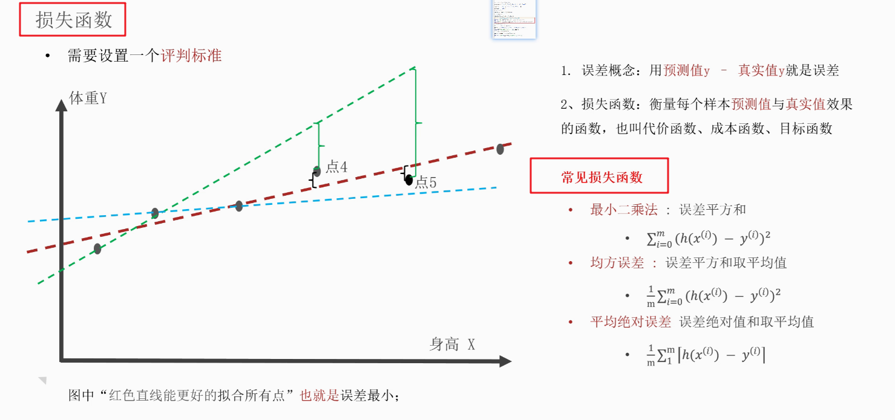
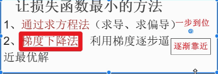
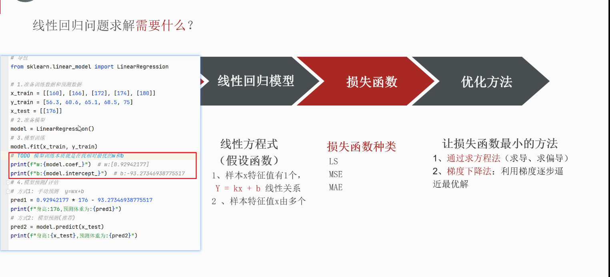
4.基本数学公式
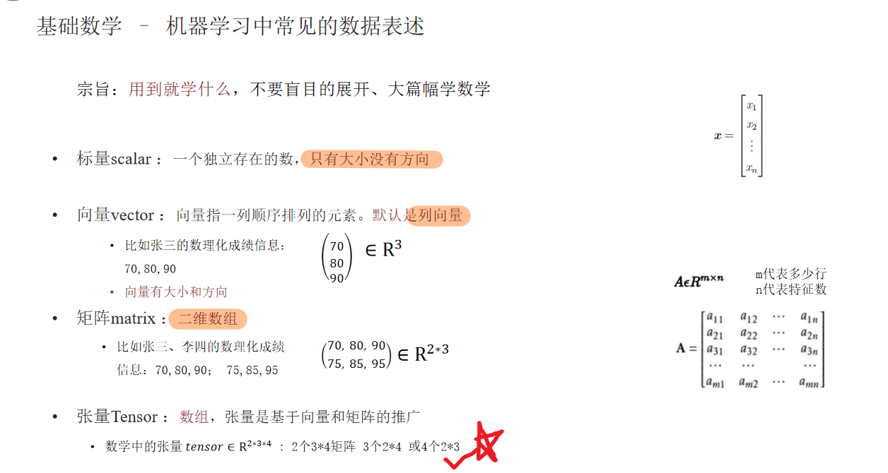
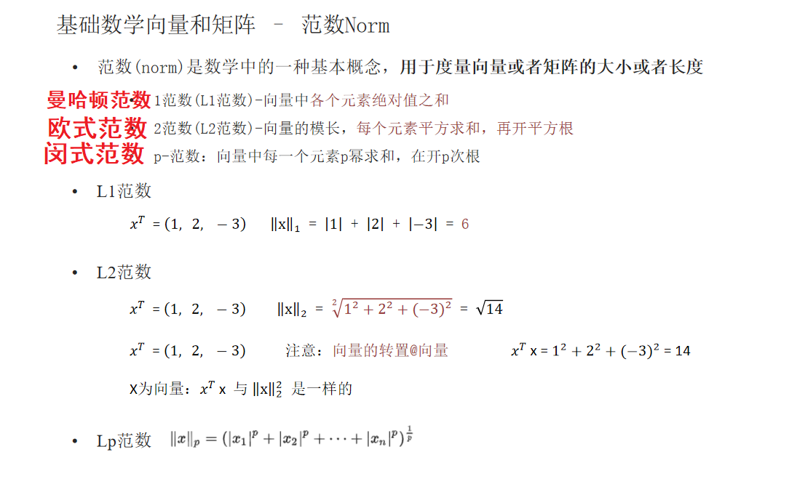
4.1 导数
- ==求导公式==
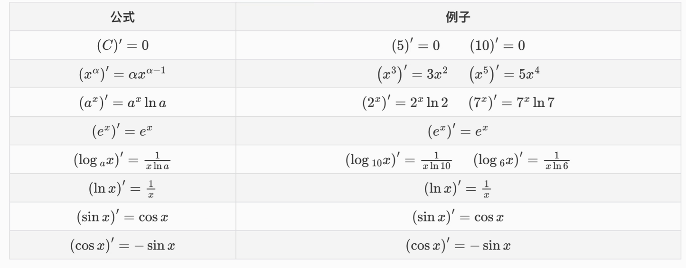
- 推导导数的案例
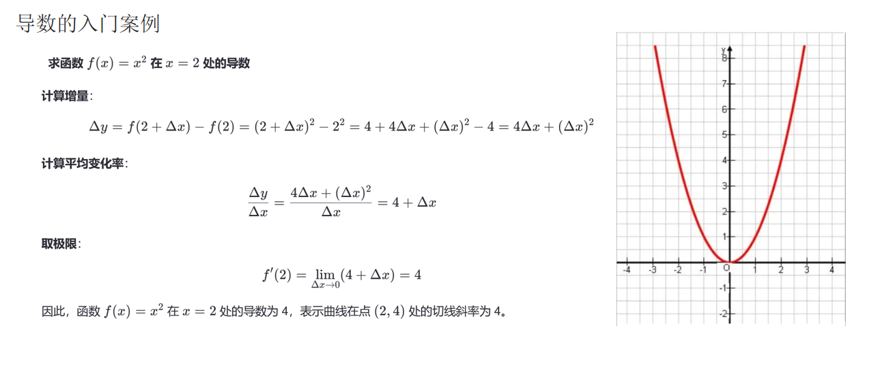
- ==导数的运算==
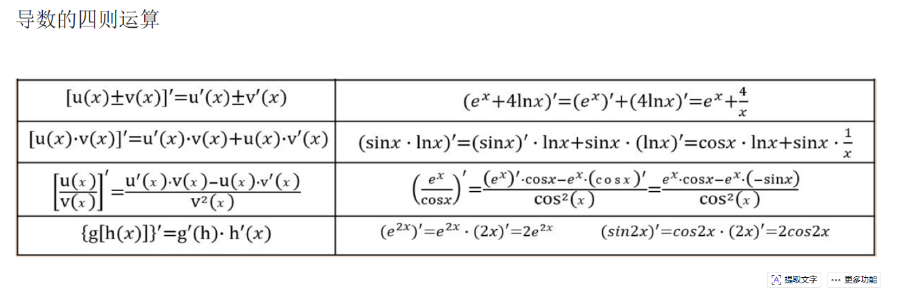
- ==求偏导==
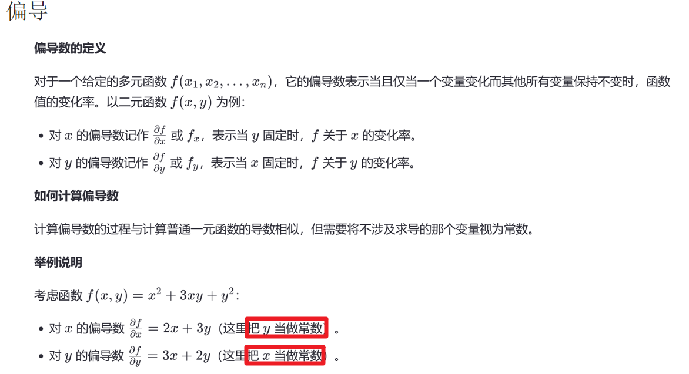
4.2 矩阵
不同型的矩阵相乘：
- A与B相乘，==必须满足A的列=B的行==，才能相乘
矩阵乘法的性质：
- 矩阵的乘法**==不满足交换律==**：A×B≠B×A
- 矩阵的乘法满足结合律。即：A×（B×C）=（A×B）×C
- ==矩阵与单位矩阵相乘等于矩阵本身==
- 矩阵转置： (A+B)^T = A^T + B^T ，==(AB)^T = B^TA^T==
单位阵：
- ==主对角线上全是1，其余部分为0，且必须是方阵==
矩阵的逆：
A@B = I单位矩阵 则B为A的逆矩阵，记为：==A^−1[A的逆]==
==A@A^T 是方阵==
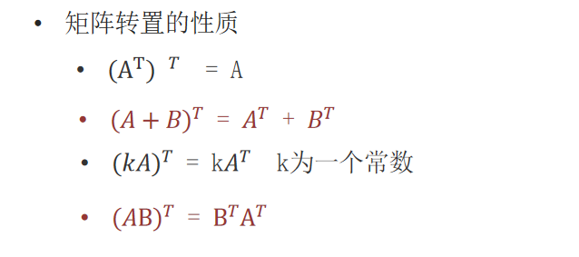
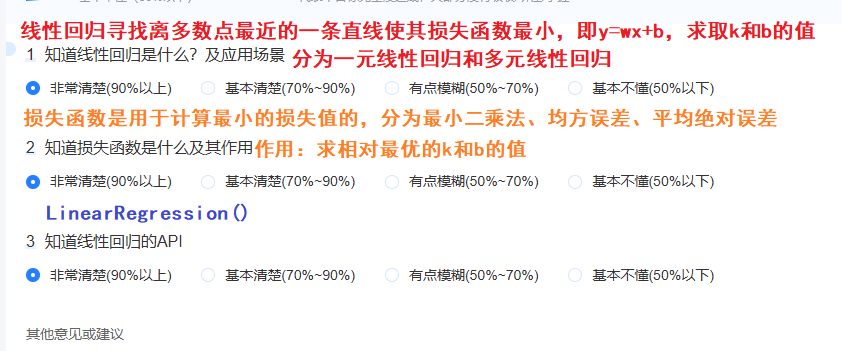

三、回归模型评估
1. 回归模型评估与损失函数对比
1.1 回归模型–损失函数(掌握)
- 作用：
- ==训练中，帮助模型找最优解==
- 常用方法：
- 最小二乘法 LS
- 均方误差 MSE
- 平均绝对误差 MAE
1.2 回归模型–评估方法（掌握）
作用:
- ==训练后,评估模型表现的好坏==
常用评估方法：
- 均方误差MSE：放大误差，对异常数据异常敏感
- 根平均误差RMSE：放大误差，对异常数据相对敏感
- 平方绝对误差MAE：真实平均误差，对异常数据不敏感
2.分类模型评估与损失函数对比
1.1 回归模型–损失函数(掌握)
- 作用：
- ==训练中，帮助模型找最优解==
- 常用方法：
- 最小二乘法 LS
- 均方误差 MSE
- 平均绝对误差 MAE
1.2 分类模型–评估方法
作用：
- 训练后,评估模型表现的好坏
常用评估方法：
- 准确率
- 精确率
- 召回率
- F1分数
面试问答知识点串联：
1. 讲一下网格搜索和交叉验证的底层原理？
答：
首先我们在使用交叉验证之前要先将数据集切割成训练集和测试集，然后手动设置超参数组合以及交叉验证的数量，如：cv=5，称为5折交叉验证；
然后通过网格搜索和交叉验证，将训练集单独取出划分成n份，拿一份做测试集(验证集)，其余n-1份做训练集，通过网格搜索，进行两两匹配(笛卡尔积)，再通过交叉验证组合得出每次超参组合的分数，求出每一组的平均分数，再通过比较，选择平均分最高的那一次组合作为我们的相对最优超参，也就找到了相对最优k值。
2.什么是线性回归，以及描述一下它的应用场景？
答：
即特征和标签之间的线性关系；分为一元线性回归和多元线性回归，一元即标签与一个特征之间的线性关系(y = wx + b)，多元即标签与多个特征之间的关系(y = w1x1+w2x2+…+b)；应用场景：与线性相关的场景，例如房价预测，根据身高预测体重等等。
3. 机器学习中的线性回归算法如何找到最优的w(权重)和b(截距)？
答：
调用API： sklearn.model_selection.LinearRegression();
底层实现： 有两种方法可以实现，一种是求正规线性方程，另一种是梯度下降方法
正规线性方程：通过求损失函数的最小值，如果是一元线性回归方程，通过求损失函数（最小二乘）的偏导数=0，求取k和b的值；如果是多元线性回归方程，也是通过求损失函数（均方误差）的偏导数=0，获取w(权重)和b(截距)的值。
梯度下降：通过迭代求解的方式，朝着梯度下降的方向求导，直至找到极值点，来获取w和b的值。
4. 什么是损失函数，损失函数的分类？
答：
衡量预测值与真实值之间的差异的函数。
损失函数的分类：
最小二乘法 LS，
均方误差 MSE，
平均绝对值误差MAE。
5. 请简述线性回归算法的两种思路？
答：
底层实现：
有两种方法可以实现，一种是求正规线性方程，另一种是梯度下降方法
正规线性方程：通过求损失函数的最小值，如果是一元线性回归方程，通过求损失函数（最小二乘）的偏导数=0，求取k和b的值；如果是多元线性回归方程，也是通过求损失函数（均方误差）的偏导数=0，获取w(权重)和b(截距)的值。
梯度下降：通过迭代求解的方式，朝着梯度下降的方向求导，直至找到极值点，来获取w和b的值。
6. 什么是梯度下降，梯度下降的核心思想是什么，以及它的分类？
答：
什么是梯度下降：
梯度grad,如果是单变量函数，梯度就是某一点的切线的斜率，如果是多变量函数，梯度就是某一点切线的偏导数
梯度下降的核心思想：
沿着梯度下降的方向求导
分类：
BGD/FGD：批量梯度下降/全样本梯度下降算法，SGD：随机一个样本梯度下降算法，MBGD：小批量随机梯度下降算法
7. 正规方程和梯度下降的的区别是什么？
答：
正规方程：
优点：一步到位
缺点：计算量大，可能无解
梯度下降：
优点：迭代求解，一定能找到解，特征数量较大可以使用，适合大数据场景等等
缺点：可能出现局部最优的解，学习率过大，可能会导致梯度爆炸/震荡
8.回归模型的损失函数和回归模型的评估方法的核心区别？
答：
回归模型–损失函数：
作用：训练中，帮助模型找最优解
损失函数的分类：
最小二乘 LS：求1~n个样本 预测值与真实值 差值的平方和
均方误差 MSE：求1~n个样本 预测值-真实值 的平方和的平均
平均绝对值误差 MAE：求求1~n个样本 预测值-真实值的绝对值的 和平均
回归模型–评估方法：
作用：训练后，评估模型的好坏
评估方法分类：
均方误差 MSE：放大误差，对异常数据极其敏感
根平均误差 RMSE：放大误差，对异常数据相对敏感
平均绝对值误差 MAE：真实误差，对异常数据不敏感
9.为什么回归没有准确率这样的说法？
答：
核心原因：回归和分类的本质区别
- 任务类型不同
- 分类任务：预测离散的类别标签
- 例如：预测照片是猫还是狗（二分类）
- 例如：预测鸢尾花的品种（多分类）
- 结果可比较：预测结果要么对，要么错
- 回归任务：预测连续的数值
- 例如：预测房价、体重、温度
- 例如：预测股票价格
- 结果不可简单判断对错：预测值几乎不可能与真实值完全相同
10 . 线性回归的API，梯度下降API？
答:
sklearn.model_selection.LinearRegression()
sklearn.model_selection.SGDRegressor()
11. 出现欠拟合和过拟合的原因，如何解决？
答：
什么是欠拟合：
训练集上表现差，测试集上表现也差，模型过于简单；
什么是过拟合：
训练集上表现好，测试集上表现差，模型过于复杂；
原因：
欠拟合：
由于特征数据较少，模型过于简单，导致的欠拟合
过拟合：
由于特征数据过多，出现了异常值，模型过于复杂，导致了过拟合
解决方法：
欠拟合：
增加特征；
过拟合：
减少特征，消除异常值，正则化；
12.正则化解决过拟合问题中，L1和L2的作用？
答：
正则化：通过在损失函数中添加惩罚项，约束模型参数，防止过拟合。
L1(Lasso回归)：无限趋近于0，可以直接等于0；
L2(Ridge回归)：无限趋近于0，但不会等于0。